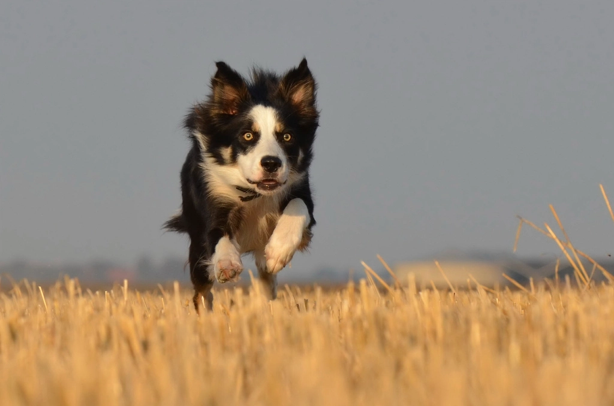
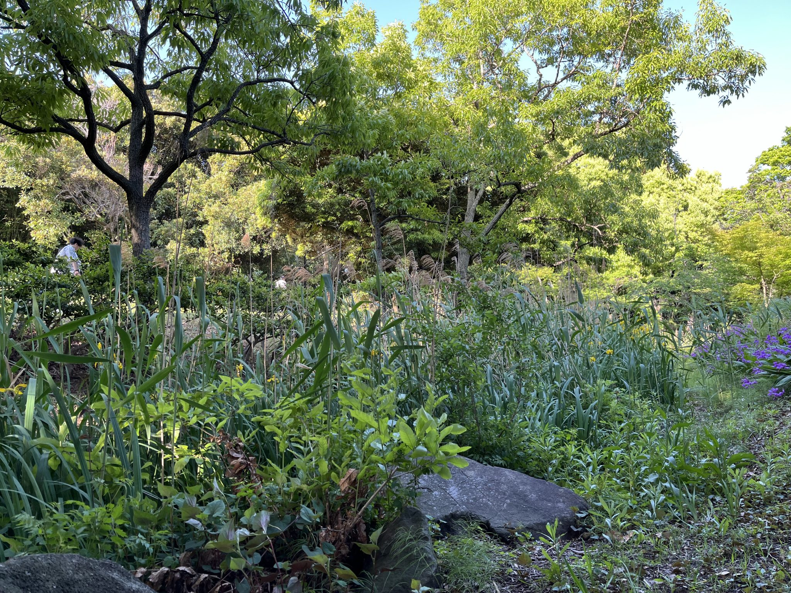
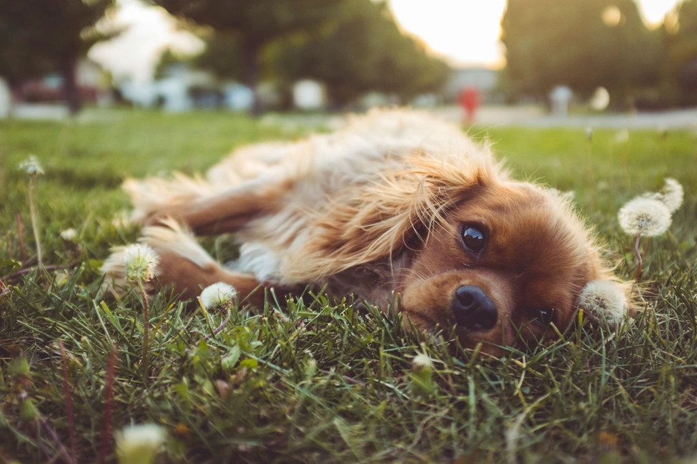
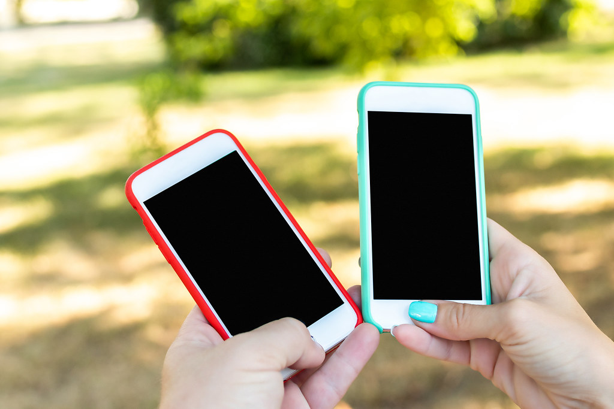

広いドッグラン
自然に囲まれた敷地に、広々としたドッグランを備えています。（ドッグランのイメージ写真）

当店がいちばん大切にしているのは、子犬たちが心身ともに健やかに育つ環境と、お迎えいただいたあとも安心していただけるご縁です。
当店は以前の店舗から移転し、「いつか広いドッグラン付きの店舗を持ちたい」という想いをかたちにしました。現在の石和町の店舗では、広々としたドッグランと自然の庭の中で、子犬たちがのびのびと過ごしています。
「先代犬の頃から20年以上のお付き合いになります。念願だった広いドッグラン付きの店舗が実現した姿を見て、感慨深い気持ちになりました。」

自然に囲まれた敷地に、広々としたドッグランを備えています。（ドッグランのイメージ写真）

緑豊かな庭で、子犬や親犬たちが日々を過ごしています。（庭のイメージ写真）
清潔さを保った店内で、落ち着いてお過ごしいただけます。
「とても綺麗な店内と、ドッグランのある広いお庭が印象的でした。対応も子犬も、すべてに大満足です。」
当店では、一頭一頭の子犬と向き合いながら、日々のお世話を続けています。子犬は生まれてから皆さまのもとへ向かうまでの間、環境や体調によって大きく変わる、とても繊細な時期を過ごします。だからこそ、広いドッグランと自然の庭で体を動かし、清潔な店内で穏やかに過ごせる環境を大切にしてきました。
子犬を送り出すときにいつも思うのは、「この子がこれからも大切にされ、幸せに暮らしてくれますように」という気持ちです。それは、お迎えいただいた瞬間だけでなく、その先の暮らしまで見届けたいという責任感でもあります。だからこそ、お迎え後のご相談にも変わらず向き合い続けたいと考えています。
経験の長さだけでなく、子犬一頭一頭への愛情と責任感を持って、これからも皆さまとのご縁を大切にしてまいります。
子犬をお迎えいただいたあとも、ご不安なことがあればLINEやお電話でご相談いただけます。環境の変化で食欲や体調に変化が出ることもありますが、そうしたときも一緒に様子を見ながらサポートいたします。

「お迎えして4〜7日目に食が細くなり心配しましたが、その間LINEやお電話でフォローしていただき、心強かったです。今はもりもり食べて元気に過ごしています。」
「初めて犬を飼うことになり少し不安もありましたが、お食事のことや体調面のことを色々教えていただき、心強く思いました。」
「心配事を相談すると親身になって話を聞いてくださり、アドバイスもいただけるので心強いです。とても信頼できるお店だと思います。」